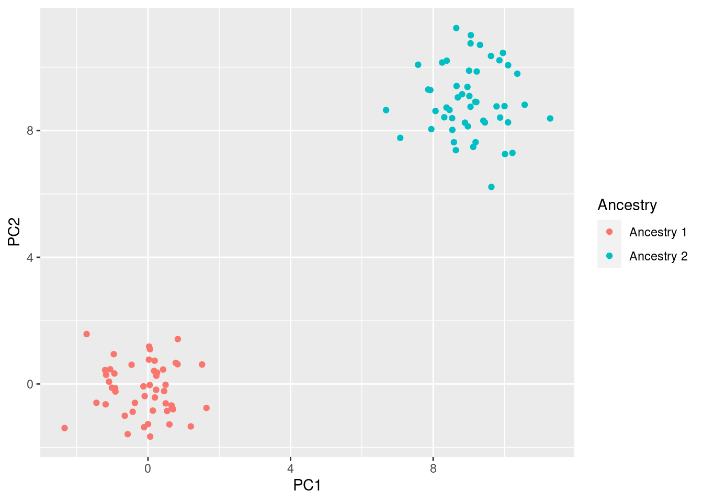

Genomics QC Report
The following is an automated report describing the quality control (QC) processing of your dataset. We first provide summary of the number of SNPs and subjects kept or removed followed by a more detailed description of the QC steps taken.
General Summary
The QC process outline below first process the data in aggregate removing SNPs and subjects with large amounts of missingness. In addition, SNPs are filtered to remove those with low minor allele frequency (MAF), frequencies are two out of equlibrium based on Hardy-Weinberg equilibrium (HWE). Then, for multiethnic samples, subject ancestries are predicted using principal components analysis (PCA) and k-means clustering. Finally, the data is filtered again at the level of each ancestry before it is later rejoined into the full dataset. Table @ref(tab:summary) summarizes the number of SNPs and subjects at each step of the QC process.
| Processing step | Number of SNPs | Number of Subjects |
|---|---|---|
| Input | 228694 | 90 |
| Output | 215694 | 88 |
| %Change | -5.684452 | -12 |
Data set description
Case/controls
Ethnicities
Data Processing
Ancestry predictions
Ancestries are predicted after the initial round of QC steps. First the standardized genetic relatedness matrix (GRM) is calcualted by standardizing the genotype matrix and then calculating the outter product of the resulting matrix. The GRM is then used to calculate the first 10 principal components (PCs). The subjects are then projected onto the PC space. The subjects are then assigned ethnicities using k-means clustering based on either a standard genomic dataset (such as though genomes) are by the reported ancestries of the subject in the study. Figure @ref(fig:ancestryPredictions) the projection of each subject onto the first few PCs. They are colored by their reported ancestries.

Per Subject summary
Subjects were filtered based on missingness and heterozygosity. An LD pruning step was also performed.
Per SNP summary
SNPS were filtered based on missingness and MAF as well as HWE.